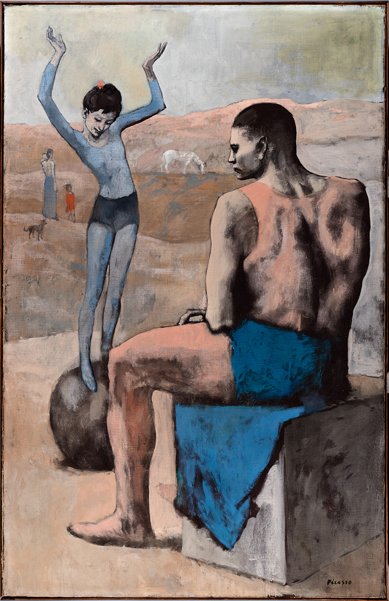

…Улюблена цитата: «Деякі художники зображають сонце жовтою плямою, інші ж перетворюють жовту пляму на сонце». Кажуть, цей вислів вийшов з-під пера Пабло Пікассо.

ФЕНОМЕН З ПРЕФІКСОМ «НАЙ»
Ексцентричний, сміливий, темпераментний, самобутній – для багатьох він є зустрічним символом та втіленням живопису ХХ століття. Його ім’я вже давно стало загальною назвою талановитого художника. А його постать постійно межує із префіксом «най»: найвідоміший, найоригінальніший, найвпізнаваніший, найвпливовіший художник в історії.
Суха статистика генія:
- Найдорожча картина у світі (з числа коли-небудь проданих) – «Алжирські жінки», Пабло Пікассо. Аукціон Christie`s. Близько 180 мільйонів доларів.
- Найплодовитіший художник у світі. Цей факт, до речі, зафіксований у Книзі рекордів Гіннеса: 13500 картин, 100000 гравюр, 34000 книжкових ілюстрацій, сотні скульптур та керамічних робіт.
- Разом – близько 150000 витворів мистецтва!
- І якщо вже «най», то і найпоцупуваніший (вибачте за словотворчість) художник у світі. У розшуку знаходяться сотні його полотен. Це, певною мірою, також комплімент!
«Натхнення існує, але воно повинно знайти нас у роботі» – Пабло Пікассо.
…а отже, «Дівчинка на кулі» – Пабло Пікассо, 1905 рік.
СВІТ БЕЗ ІНТРИГ ТА СУЄТИ
Ніжність, відчуття повітря, рожеві, небесні, перлинні тони – це те, що одразу «обіймає» глядача, запрошує його до атмосфери особливого затишку, природнього порядку речей.
В цьому світі ніхто нікуди не поспішає.
В цьому світі не існує інтриг.
В цьому світі ніхто ні з ким не бореться і не грає.
Все і всі на своєму місці. Тут не існує підступності чи комедіантства, хоч це і цирк.
І, мабуть, саме ця щирість і є «коштовною призмою» крізь яку ми вдивляємось у цей визнаний шедевр. А також ідеальна гармонія, узгодженість, рівновага світу, де один не може існувати без іншого.
Контраст нестійкості та статики. Гра крихкості та міцності. Баланс юності та зрілості, надії та приреченості. Це дивовижний синтез «блакитного» періоду Пабло Пікассо – з його меланхолією та смутком, та «рожевого» – легкого і оптимістичного.
Sedes Fortunae rotunda, Sedes Virtutis quadrata
Дослідники посилаються на цей латинський вислів, що в перекладі «престол Фортуни круглий, а Доблесті – квадратний».
Критики, історики мистецтва, мистецтвознавці… їхнє призначення, їхня місія не тільки в тому, щоб аналізувати шедеври мистецьки, а й в тому, щоб вкладати в них зміст, що, можливо, й не був відомий геніальним авторам цих робіт. Однією з інтерпретацій «Дівчинки на кулі» Пабло Пікассо є ідея про те, що сфера – то є п’єдестал богині долі Фортуни. Символ хиткості, невловимості щастя людини. Куб – це п’єдестал звитяги.
Пабло Пікассо «Дівчинка на кулі»

Клод Дебюссі «Дівчина з волоссям кольору льону»
«Музика – це не прояв почуттів, це самі почуття». «Музика – це тиша між нотами». – Клод Дебюссі.
І ми чуємо, відчуваємо нескінченні відтінки, нюанси, напівтони з яких наче зіткана ця «акварельна» краса.
І ми розуміємо, що досконалість цього образу не в портретній подібності, а саме у невловимості обрисів, у кришталевій прозорості, у ароматі повітря, у крихкій делікатності атмосфери звучання.